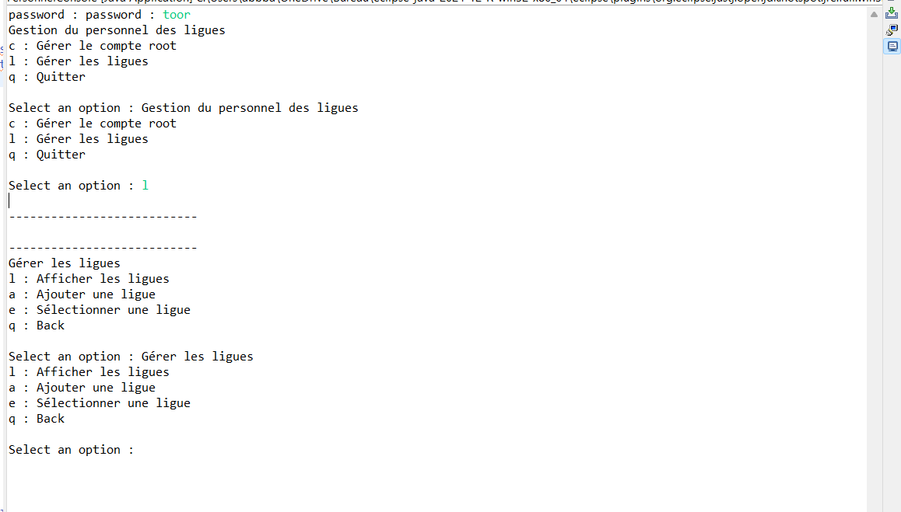

Présentation de projet
Ce projet est un projet Java conçu pour gérer les ligues. Il permet de faciliter la gestion des membres, des équipes et des événements liés aux ligues. Le projet est structuré autour d'un modèle conceptuel de données (MCD) pour assurer une gestion efficace et organisée des informations.
MCD (Modèle Conceptuel de Données)

Arbre Heuristique du Projet

Interface accueil
Ajout d'un nouveau membre
Gestion des employés